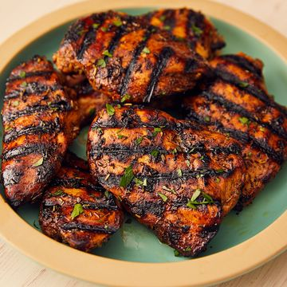

Meat delicacies
-
Grilled Breast Chicken

Ingredients- 1/4 c. balsamic vinegar
- 3 tbsp.extra-virgin olive oil
- 2 tbsp.brown sugar
- 3 cloves garlic, minced
- 1 tsp.
dried thyme
- 1 tsp.
dried rosemary
- 4
chicken breasts
- Kosher salt
- Freshly ground black pepper
- Freshly chopped parsley, for garnish
DirectionsStep 1:-In a medium bowl, whisk together balsamic vinegar, olive oil, brown sugar, garlic, and dried herbs, and season generously with salt and pepper. Reserve ¼ cup.
Step 2 :-Add chicken to the bowl and toss to combine. Let marinate at least 20 minutes and up to overnight.
Step 3:-Preheat grill to medium high. Add chicken and grill, basting with reserved marinade, until cooked through, 6 minutes per side.
Step 4:- Garnish with parsley before serving. -
Prime Rib

Ingredients- 1
standing rib roast (about 1/2 pound per person)
- 1 tbsp.
kosher salt
- 2 tsp.
- black pepper
- 1
Directions
Step 1 Remove rib roast from packaging and place in a roasting pan. Let come to room temperature about 30 minutes. Preheat oven to 450º.
Step 2 Generously cover all sides of rib roast with salt and pepper. Place roast in a roasting pan fat-side up. Arrange half the rosemary in the bottom of the pan around the roast.
Step 3 Roast 30 minutes, then reduce heat to 350º and cook 1 hour 30 minutes more for medium rare. (Plan on about 15 minutes per pound.)
Step 4 Remove roast from oven, cover with foil, and let rest 20 minutes.
Step 5 To serve, slice along ribs to remove them, then separate each rib and put them aside. Slice the roast crossways against the grain. Serve on a platter with the ribs and remaining half fresh rosemary.